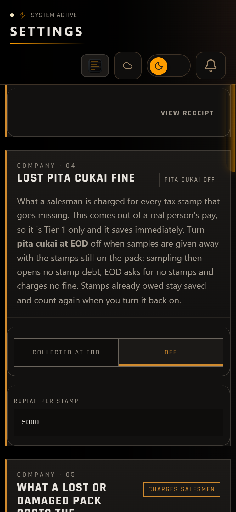
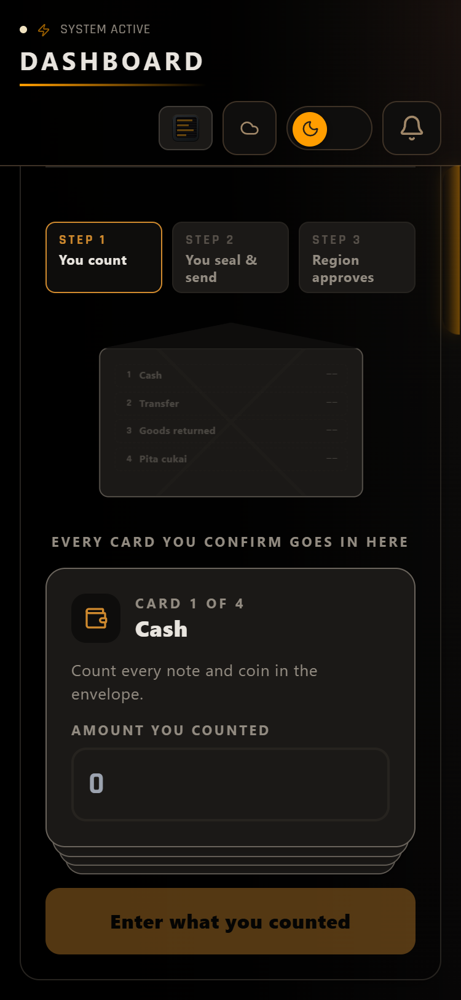
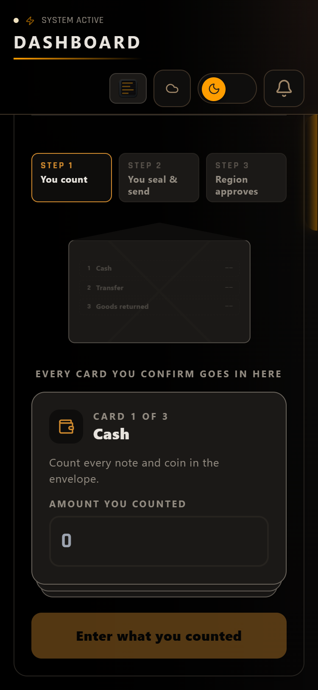
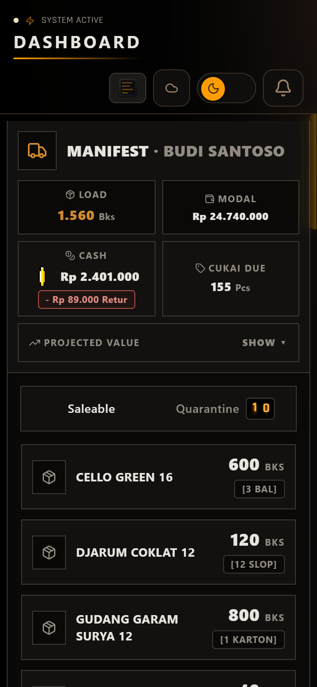
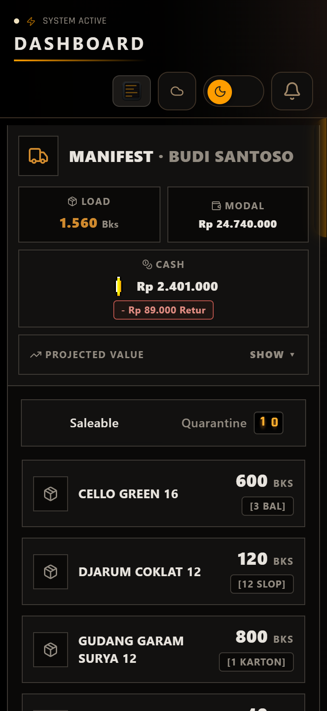

Pita cukai at EOD - the switch (phone)
ON is how it works today. OFF is for companies that give samples away with the stamps still on.

Settings: the switch, pressed OFF

EOD, ON: card 1 of 4 (stamps last)

EOD, OFF: card 1 of 3, no stamps

Van, ON: Cukai Due

Van, OFF: no Cukai Due, Cash fills the row